The following guide describes how you can configure tags in your Oro application. Tags are located under System > Tags Management in the main menu.
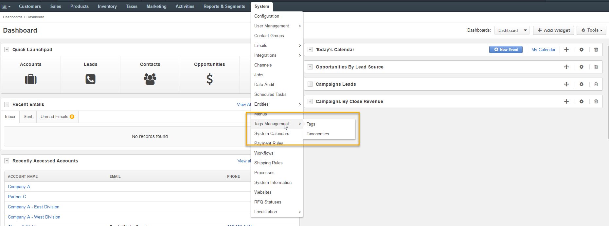Note
See a short demo on how to create tags, or continue reading the guidance below.
Prior to starting your work with tags, ensure that tagging is enabled for the required entity.
To enable tags for entities:
Navigate to the main menu and click System > Entities > Entity Management.
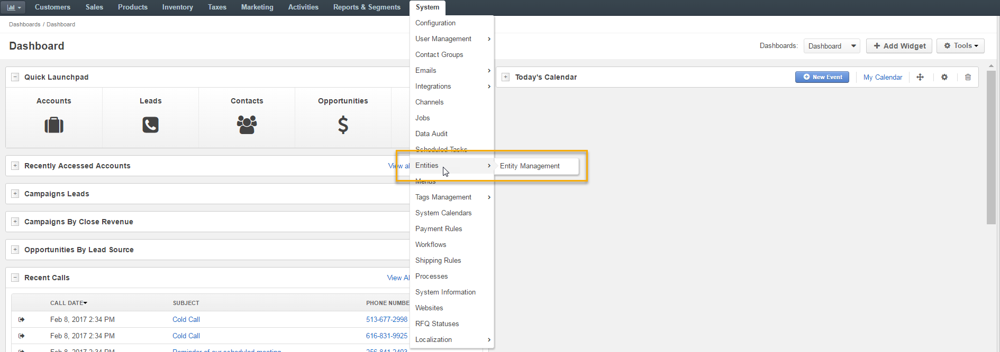Click to open the edit form for the required entity.
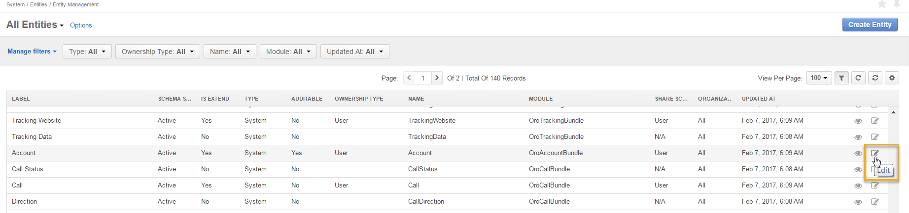In the Other section, select Yes in the Enable Tags field.
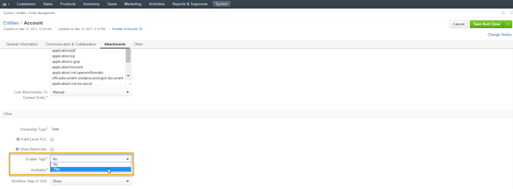Click Save and Close when you are done.
Note
Please note that if you wish to disable tags for an entity, this will irreversibly erase all its existing tags.
Tags can be created in a number of ways:
Click Create Tag to create a new tag.
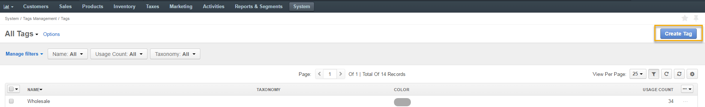Define the following fields:
| Field | Description |
|---|---|
| Owner | Limits the list of users who can manage the tag. |
| Name | Specify the name for your tag. |
| Taxonomy | Select the taxonomy to which the tag will be assigned. |
Navigate to Customers > Accounts in the main menu or select any other entity to create a tag for.
Within the list of an entity, select the required entity and click .
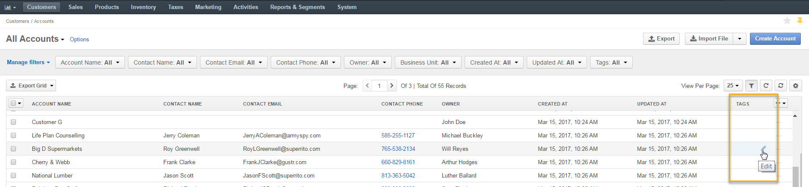Specify tags for the entity. You can enter multiple tags for one entity.
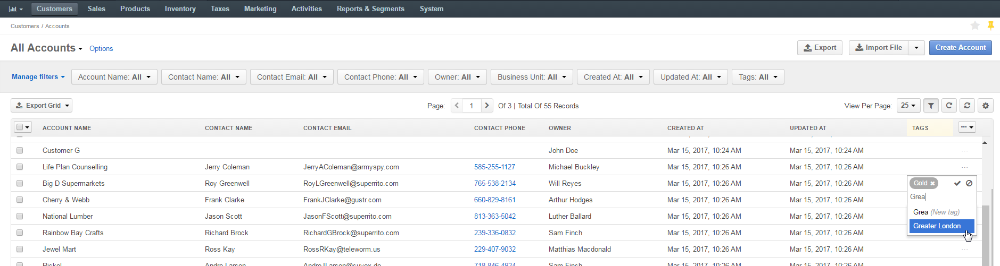Click to save the tags for the entity.
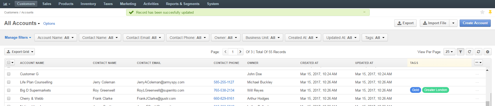Click in Tags.
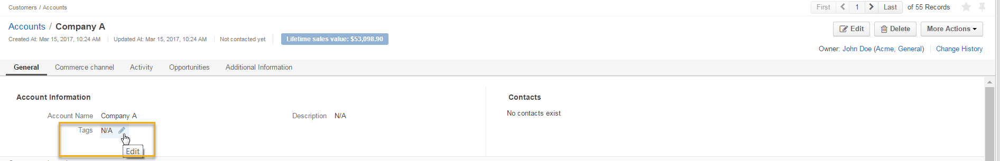Specify tags for the entity. You can enter multiple tags for one entity.
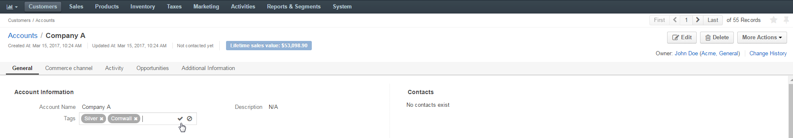Click to save the tags for the entity.
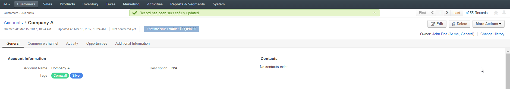Navigate to System > Tags Management > Tags.
Within the tags list, you can:
Search records by a tag:
Edit the selected tag:
Delete a tag from the system:
Filter tags:
Configure grid settings for tags:
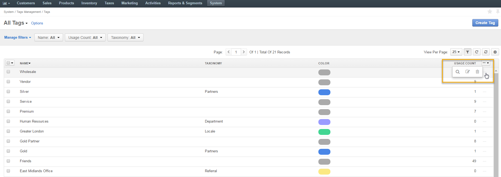 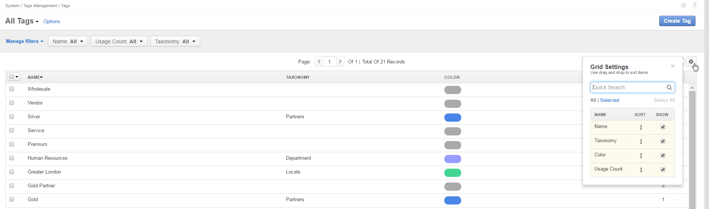Clicking the selected tag will redirect you to a page where you can view all the records that have been assigned to your selected tag. This way you can search for any required tag within the system.
For instance, clicking Gold will redirect you to the page with a list of all records that have Gold as a tag.
The number in brackets indicates the how many records within the group are assigned to the selected tag.
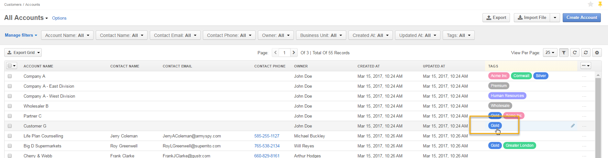 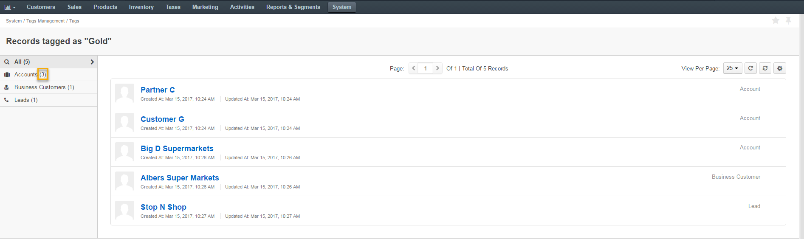It is possible to filter your reports by tags. For instance, we can create a report that will show contacts tagged as Gold. To do that:
You can create any reports of your choice and filter them by tag in a similar manner.